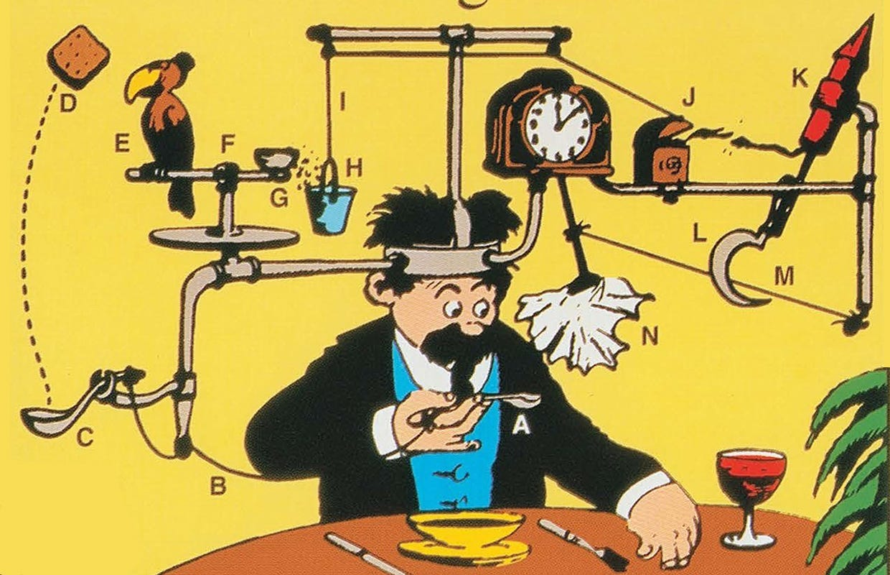
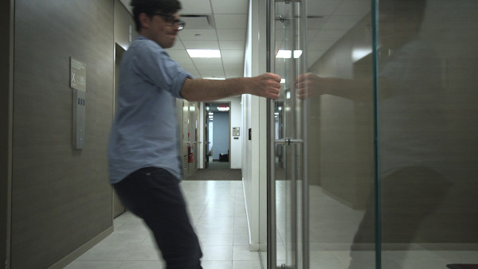
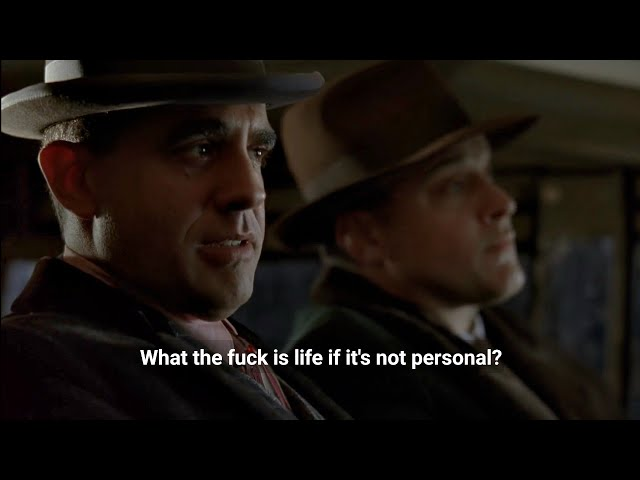

A few principles that have gradually shaped the way I think about software, problems and working with people.
01
Technology is a servant with a dangerous habit of asking to be worshipped.
And engineers are particularly easy to seduce.
We admire cleverness. We polish abstractions. We build architectures of great symmetry and give names to patterns that make us feel we have understood the world.
Sometimes we have only understood the code.
Software does not exist to justify its own elegance. It exists because somewhere, somebody is trying to do something, and something stands in the way.
That is the beginning of the story.
The code, the framework, the database, the architecture: all of them come later. They are tools. Useful ones, beautiful ones at times, but tools nonetheless.
The world owes us nothing for the beauty of our code.
A wonderfully designed system that solves the wrong problem is still the wrong system. A simpler solution that makes somebody's life noticeably better may be the greater piece of engineering.
So I try to return, again and again, to one question:
What problem are we solving?
Not what ticket are we implementing. Not what technology would be interesting to use. Not what architecture would look impressive on a diagram.
What problem are we solving?
If we cannot answer that clearly, perhaps we should stop touching the code.


02
The code does not know what hurts. People do.
We can look at logs, traces, metrics and tickets. We can reproduce a bug, inspect a request and follow the path through the system. All of that matters.
But none of it tells the whole story.
Somewhere beyond the screen there is a person trying to do something. They have a goal, a context, a deadline, a frustration. They know which parts of our product are genuinely useful, which are confusing, which are painful, and which things we spent weeks perfecting that they barely notice.
That is why I like staying close to support and to the people who deal with users every day.
Support is where our assumptions are forced to meet reality.
You discover what people are actually trying to do, not what you imagined they would do. You see where they hesitate, where the system surprises them, what they misunderstand, and what they simply do not care about.
It is one of the few places where software stops being an abstraction and becomes part of somebody else's day.
Knowing your user does not mean blindly giving people whatever they ask for. It means understanding them well enough to distinguish the request from the need, the symptom from the problem, and our assumptions from their reality.
If technology is a means, this is how we remember what it is a means for.
03
A ticket is a description of a problem seen from one particular moment, by one particular person, with the information available at the time.
Reality has no obligation to respect it.
Sometimes the requested change is exactly what is needed. Sometimes it is only a symptom, an assumption, or the first plausible explanation somebody found.
So I try not to inherit the solution before I understand the problem.
And understanding the problem usually means going one step further than the task itself.
What is really happening? Why is it happening? Who is affected? Under which conditions? What are the consequences of fixing it one way rather than another? What new problem might we be creating while solving this one?
Look at what the system is actually doing. Reproduce it. Measure it. Read the logs, the code, the documentation. Ask the people who know something you do not. Separate what we know from what we merely suspect.
Then make the unknown smaller.
A difficult problem rarely becomes clear all at once. More often, each useful question removes one possibility, each observation gives the next experiment, and each experiment leaves a little less darkness than before.
Owning the problem means caring about all those layers, not just the wording of the task.
Not taking responsibility for everything. Not refusing to ask for help. And certainly not heroically disappearing into a cave until the answer reveals itself.
It means understanding enough of the problem, its context and its consequences to know whether the thing you are about to build is actually the thing that should be built.
Because completing the ticket is not necessarily the same thing as solving the problem.

04
It is easy to forget that there is a person on the other side of almost every problem.
A colleague who made a mistake. A customer who is frustrated. Someone from Operations asking the same question again. A developer defending a decision you disagree with. Someone having a worse day than you know.
We tend to see roles before people.
Developer. Manager. Customer. Support. Product.
But roles are abstractions. People are not.
This does not mean avoiding disagreement, lowering standards, or pretending that every decision is equally good. Sometimes you have to say no. Sometimes you have to challenge an idea. Sometimes something is simply wrong.
It means trying not to forget the person while dealing with the problem.
A little patience, a little context, a little generosity in how we interpret other people's actions can change the whole texture of working together.
There is rarely a good reason to make life harder for each other.
And in a profession already full of complexity, uncertainty and pressure, being someone who reduces friction instead of adding to it is not a small thing.